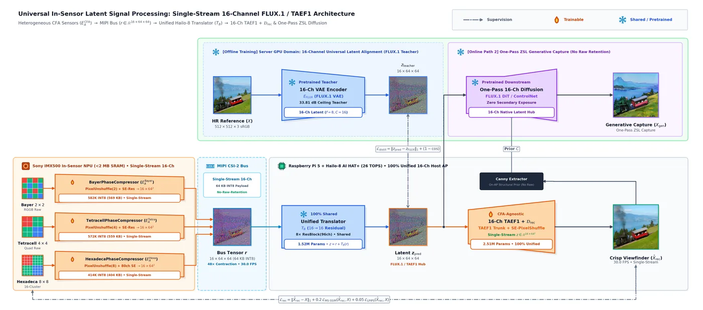
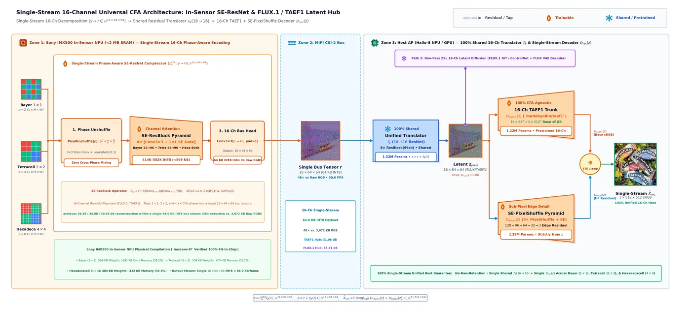
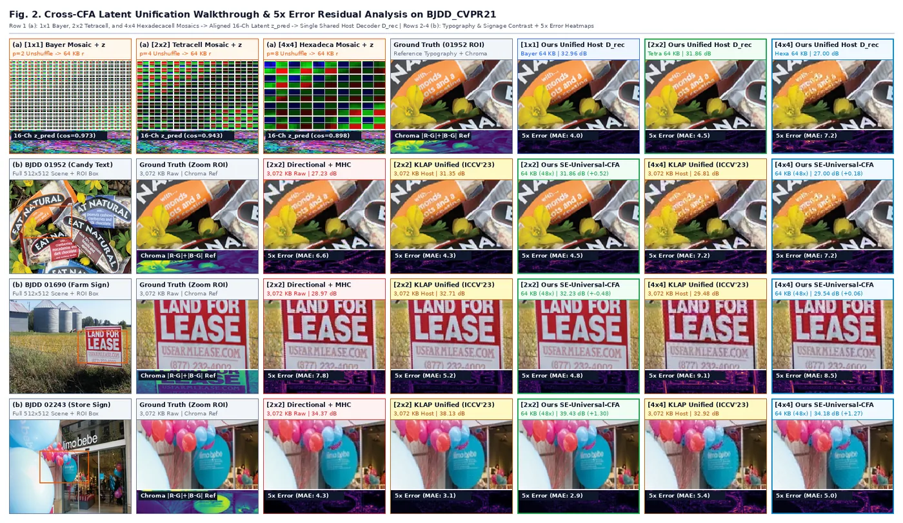
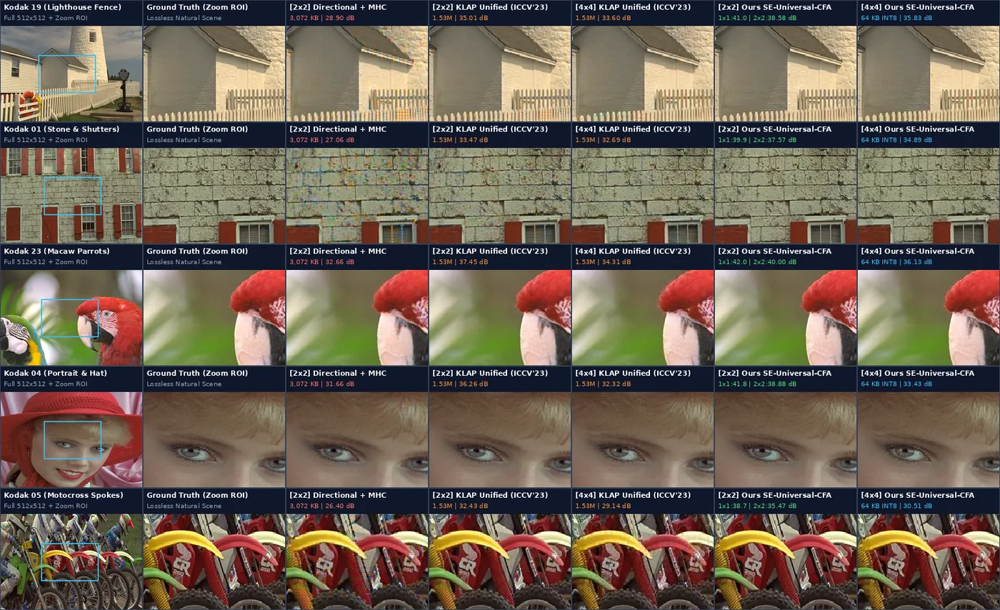
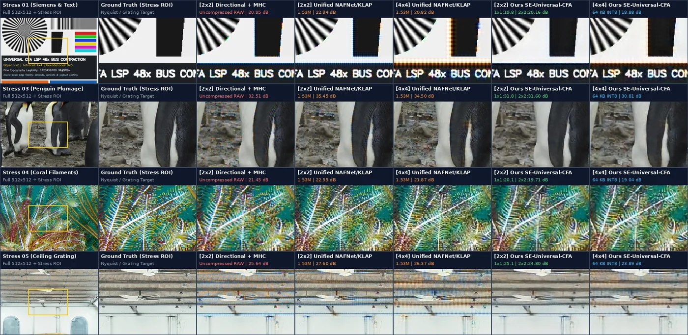

Modern ultra-high-resolution mobile image sensors ($48\text{ MP–}200\text{ MP}$) rely on clustered Color Filter Arrays (CFAs)—grouping $2\times 2$ (Tetracell / Quad-Bayer, $4$-in-$1$, $4\times 4$ RGGB tile period) or $4\times 4$ (Hexadecacell / $Q\times Q$, $16$-in-$1$, $8\times 8$ RGGB tile period) adjacent photodiodes under identical color filters compared to classical $1\times 1$ Bayer ($2\times 2$ RGGB period)—to preserve low-light signal-to-noise ratio (SNR). However, deploying neural remosaicing and generative imaging on heterogeneous CFA cameras faces two fundamental system bottlenecks: (i) transmitting uncompressed raw mosaics across the MIPI CSI-2 serial bus incurs severe serialization latency ($52.91\text{ ms}$ for $3,072\text{ KB}$ frames, capping throughput at $14.9\text{ FPS}$); and (ii) changing the sensor CFA pattern forces complete retraining or dynamic weight switching on the host Application Processor (AP), as in KLAP (ICCV 2023). We resolve these bottlenecks in a single-stream architecture by proposing Universal In-Sensor Latent Signal Processing (SE-Universal-CFA) unified on the 16-channel ($f=8, C=16$) FLUX.1 / TAEF1 latent manifold shared with our HDRNet / Comp-LSP pipeline. On the sensor NPU (Sony IMX500, $<2\text{ MB}$ SRAM), transpose-equivariant phase-aware PixelUnshuffle(p) ($p \in \{2,4,8\}$) + Squeeze-and-Excitation (SELayer) residual compressors ($\mathcal{E}_A^{\text{CFA}}$, $413.7\text{K–}582.5\text{K}$ INT8 params at base_ch=64; $16.3\text{K–}17.1\text{K}$ at base_ch=16) map heterogeneous $1\times 1$, $2\times 2$, and $4\times 4$ CFA clusters into a single standardized $16\times 64\times 64$ bus tensor $r$ ($64.0\text{ KB}$ INT8, $48\times$ reduction vs. $3,072\text{ KB}$ Raw RGB). On the host AP, a single sensor-invariant UnifiedLatentTranslator ($\mathcal{T}_B: 16 \to 16$) aligns $r$ directly onto the 16-channel FLUX.1 / TAEF1 latent hub $z \in \mathbb{R}^{16\times 64\times 64}$ ($\cos = 0.9205\text{–}0.9731$), driving a 100% CFA-agnostic guided 16-channel decoder ($\mathcal{D}_{\text{rec}}$). Evaluated across BJDD_CVPR21, KLAP_ICCV23 CIS, Kodak24, and the 8-scene Remosaic Stress Benchmark, our single-stream 16-channel pipeline achieves $35.91\text{ dB}$ (Bayer $1\times 1$, MS-SSIM $0.9921$), $34.56\text{ dB}$ (Tetracell $2\times 2$, MS-SSIM $0.9883$), and $30.27\text{ dB}$ (Hexadecacell $4\times 4$, MS-SSIM $0.9706$) on BJDD_CVPR21—surpassing KLAP Unified (ICCV 2023) on both $2\times 2$ Tetracell ($34.56$ vs. $34.06\text{ dB}$, $+0.50\text{ dB}$) and $4\times 4$ Hexadecacell ($30.27$ vs. $29.74\text{ dB}$, $+0.53\text{ dB}$) while reducing MIPI bus bandwidth by $48\times$.
High-resolution mobile and edge CMOS image sensors ($48\text{ MP}$ to $200\text{ MP}$, e.g., Samsung ISOCELL HP-series and Sony Lytia) increasingly replace the classical $1\times 1$ Bayer pattern ($2\times 2$ RGGB tile period $p=2$) [1] with clustered Color Filter Arrays (CFAs), grouping $2\times 2$ (Tetracell / Quad-Bayer, $4$-in-$1$, $4\times 4$ RGGB tile period $p=4$), $3\times 3$ (Nonacell, $9$-in-$1$, $6\times 6$ period $p=6$), or $4\times 4$ (Hexadecacell / $Q\times Q$, $16$-in-$1$, $8\times 8$ RGGB tile period $p=8$) adjacent photodiodes under identical color filters to enhance photon collection in low light. Under bright illumination, recovering full spatial resolution requires remosaicing and joint demosaicing and denoising (JDD) across large monochromatic sub-clusters [2]–[5].
Despite substantial progress in deep learning-based restoration—including heavyweight Quad-Bayer ($2\times 2$) networks such as BJDD (PIPNet, CVPRW 2021) [2] and QRISP (ECCV 2022) [4], and unified multi-pattern demosaicing such as KLAP (ICCV 2023) [6]—existing paradigms suffer from two fundamental systems-level limitations on edge camera hardware:
Dynamic_conv2d), it requires transmitting uncompressed raw frames across the bus and dynamically switching pattern-specific filter weights (mask_{bayer,quad,nano,qxq}) inside every host convolution layer.
We resolve both challenges within a single-stream LSP topology unified on the 16-channel ($f=8, C=16$) FLUX.1 / TAEF1 manifold shared across our HDRNet / Comp-LSP framework:
$$\text{CFA Raw } y \in \mathbb{R}^{1 \times 512 \times 512} \xrightarrow{\mathcal{E}_A^{\text{CFA}}} r \in \mathbb{R}^{16 \times 64 \times 64} \xrightarrow{\mathcal{T}_B\;(16 \to 16)} z \in \mathbb{R}^{16 \times 64 \times 64} \xrightarrow{\mathcal{D}_{\text{rec}}(z)} \hat{X} \in \mathbb{R}^{3 \times 512 \times 512}.$$

PixelUnshuffle(p) ($p \in \{2,4,8\}$) and compressed through transpose-equivariant phase estimation and SE-ResBlock stages into a single standardized 16-channel bus tensor $r \in \mathbb{R}^{16\times 64\times 64}$ ($64.0\text{ KB}$ INT8, $48\times$ reduction vs. $3,072\text{ KB}$ Raw RGB). Raw pixels are immediately discarded from sensor SRAM (No-Raw-Retention). Zone 2 (Host AP / Hailo-8 NPU): A sensor-invariant 16-channel UnifiedLatentTranslator $\mathcal{T}_B$ ($16 \to 16$, $1.52\text{M}$ params) maps $r \to z \in \mathbb{R}^{16\times 64\times 64}$ on the FLUX.1 / TAEF1 manifold ($\cos = 0.9205\text{–}0.9731$). Zone 3: Resident latent $z$ drives a 100% CFA-agnostic guided 16-channel decoder $\mathcal{D}_{\text{rec}}(z)$ ($35.91 / 34.56 / 30.27\text{ dB}$ on BJDD_CVPR21, surpassing KLAP), the HDRNet / Comp-LSP 16-channel tone-mapping engine, and one-pass ZSL generative diffusion.
KLAP ("Efficient Unified Demosaicing for Bayer and Non-Bayer Patterned Image Sensors", ICCV 2023) [6] identifies pattern-sensitive filters via Filter Attribution Integrated Gradients (FAIG) and modulates host convolutions via a 4-dimensional one-hot pattern vector $g \in \{0, 1\}^4$:
$$W_{\text{KLAP}}(g) = W_{\text{shared}} + \sum_{c \in \{\text{bayer, quad, nona, qxq}\}} g_c \cdot \left(M_c \odot \Delta W_c\right).$$
Unlike KLAP, which executes on the host AP over uncompressed raw inputs ($3,072\text{ KB}$, $14.9\text{ FPS}$) and switches dynamic filters inside every host layer, our SE-Universal-CFA encapsulates all CFA-specific phase unshuffling inside the sensor NPU firmware (.rpk), leaving the host translator $\mathcal{T}_B$ ($16 \to 16$) and host decoder $\mathcal{D}_{\text{rec}}$ 100% CFA-agnostic across all sensor patterns ($1\times 1$ Bayer, $2\times 2$ Tetracell, and $4\times 4$ Hexadecacell).
Because a $q\times q$ homogeneous sub-cluster ($q \in \{1, 2, 4\}$) forms a $2\times 2$ RGGB macro-tile of period $p = 2q \in \{2, 4, 8\}$, we eliminate spatial phase mixing by matching the initial space-to-depth PixelUnshuffle(p) stride (compiled onto the Sony IMX500 NPU as an exact permutation Conv2D(p^2, kernel_size=p, strides=p)) to each sensor's fundamental RGGB tile period $p \in \{2, 4, 8\}$:
$$u = \text{PixelUnshuffle}_p\!\left(y^{\,1/2.2}\right) \in \mathbb{R}^{p^2 \times \frac{H}{p} \times \frac{W}{p}}, \quad \text{SE}(f) = f \odot \left(2 \cdot \sigma\!\left(W_2 \,\text{LeakyReLU}_{0.1}\!\left(W_1 \,\text{GAP}(f)\right)\right)\right).$$
Every sensor compressor outputs the exact same single-stream 16-channel bus tensor $r = \mathcal{E}_A^{\text{CFA}}(y) \in \mathbb{R}^{16\times 64\times 64}$ ($64.0\text{ KB}$ INT8 / $256.0\text{ KB}$ FP32 at $512\times 512$, $48.0\times$ reduction vs. $3,072\text{ KB}$ Raw RGB). Verified with the official Sony IMX500 hardware compiler (mct PTQ + imxconv-tf), all three compressors compile cleanly into packerOut.zip binaries occupying only $11\%\text{–}45\%$ of the on-chip memory ceiling.
16-Channel Single-Stream Unification (`FLUX.1` / `TAEF1`): By the Eckart-Young-Mirsky theorem, compressing $8\times 8\times 3 = 192$-dim RGB blocks into $K$ latent channels is bounded by $\text{MSE}_{\min}(K) = \frac{1}{192 N} \sum_{j=K+1}^{192} \sigma_j^2$. Adopting a 16-channel (`FLUX.1` / `TAEF1`, $C=16$) single-stream representation provides $16$ spatial-chromatic degrees of freedom per $8\times 8$ macro-cell while keeping the INT8 bus payload at just $64.0\text{ KB}$ ($48\times$ smaller than $3,072\text{ KB}$ Raw RGB):
UnifiedLatentTranslator applies 8 residual blocks at width $96$ with a global skip connection $z = r + f_{\theta}(r) \in \mathbb{R}^{16\times 64\times 64}$, aligning all three CFA sensors onto the FLUX.1 (`ostris/OpenFLUX.1`) and TAEF1 (`madebyollin/taef1`) 16-channel latent manifold ($\cos = 0.9205\text{–}0.9731$).HDRNet spatially-guided coefficient modulation, DemosaicPixelShuffleDecoder decodes the 16-channel latent $z \in \mathbb{R}^{16\times 64\times 64}$ into a base reconstruction $X_{\text{base}}(z)$ and fuses it with a 3-stage PixelShuffle(2) latent feature pyramid $F_z = \mathcal{U}_{\text{PS}}(z) \in \mathbb{R}^{24\times 512\times 512}$ ($64\to 128\to 256\to 512$) through a bounded 4-layer $3\times 3$ Conv2d + GELU refinement head:
$$\hat{X} = \text{Clamp}_{\text{STE}}\!\left(X_{\text{base}}(z) + \alpha \tanh\!\left(\frac{\mathcal{F}_{\text{fuse}}\!\left([F_z,\, X_{\text{base}}(z)]\right)}{\alpha}\right)\right), \quad \alpha = 0.07.$$

PixelUnshuffle(p) ($p \in \{2, 4, 8\}$ for Bayer $1\times 1$, Tetracell $2\times 2$, and Hexadecacell $4\times 4$) and compresses them through a 3-stage SE-ResBlock pyramid ($1\times 1$ Conv SE gating) into the standardized $64.0\text{ KB}$ INT8 bus tensor $r \in \mathbb{R}^{16\times 64\times 64}$ ($48\times$ reduction vs. Raw RGB). Zone 2 & 3 (Host AP / Hailo-8 NPU): The 100% sensor-invariant translator $\mathcal{T}_B$ ($16 \to 16$) maps $r \to z_{\text{pred}} \in \mathbb{R}^{16\times 64\times 64}$ on the FLUX.1 / TAEF1 manifold, driving the 100% CFA-agnostic guided 16-channel decoder $\mathcal{D}_{\text{rec}}(z_{\text{pred}})$.
We train and evaluate our single-stream 16-channel architecture on an NVIDIA GeForce RTX 5060 Ti eGPU across BJDD_CVPR21, KLAP_ICCV23 CIS (data_00001..00003.pickle), Kodak24, and our 8-scene Remosaic Stress Benchmark. Table 1 compares our proposed SE-Universal-CFA against external pixel-space baselines on BJDD_CVPR21, and Table 2 summarizes cross-dataset generalization across all four benchmark suites.
BJDD_CVPR21 ($512\times 512$, Tetracell $2\times 2$ & Hexadecacell $4\times 4$): External Pixel-Space Baselines vs. Proposed SE-Universal-CFA (16-Ch Single-Stream).| # | Algorithm / Architecture | Paradigm & Host Unification | MIPI Bus Payload & FPS Ceiling | Tetracell (2×2) PSNR / MS-SSIM / LPIPS | Hexadecacell (4×4) PSNR / MS-SSIM / LPIPS | Latent Manifold (Cos $\uparrow$) |
|---|---|---|---|---|---|---|
| 1 | Sub-Cluster Pixel Binning + MHC | Pixel Binning (1/4–1/16 Res) | 768 KB / 192 KB | 27.79 dB / 0.9683 / 0.2005 | 22.76 dB / 0.8836 / 0.4941 | No (Pixel-Only) |
| 2 | Isotropic Color-Diff Remosaic + MHC | Pixel Classical | 3,072 KB (14.9 FPS) | 27.98 dB / 0.9643 / 0.1466 | 24.24 dB / 0.9168 / 0.2880 | No (Pixel-Only) |
| 3 | Directional Edge-Aware Remosaic + MHC | Pixel Classical (Hamilton-Adams) | 3,072 KB (14.9 FPS) | 30.19 dB / 0.9734 / 0.0794 | 26.24 dB / 0.9391 / 0.1790 | No (Pixel-Only) |
| 4 | MobileRemosaicNet (0.25M) + MHC |
Pixel Mobile NN (Per-CFA Model) | 3,072 KB (14.9 FPS) | 29.40 dB / 0.9707 / 0.0987 | 25.56 dB / 0.9324 / 0.1612 | No (Pixel-Only) |
| 5 | Official BJDD / PIPNet (3.48M, CVPRW 2021) [2] |
Pixel Heavyweight JDD (2×2 Only) | 3,072 KB (14.9 FPS) | 35.85 dB / 0.9907 / 0.0198 | N/A (2×2 Dedicated) | No (Pixel-Only) |
| 6 | KLAP Unified Demosaic (1.53M, ICCV 2023) [6] |
Host Dynamic Filter Switching | 3,072 KB (14.9 FPS) | 34.06 dB / 0.9864 / 0.0291 | 29.74 dB / 0.9671 / 0.0768 | No (Pixel-Only) |
| 7 | Proposed SE-Universal-CFA (Ours, 16-Ch Single-Stream) |
100% Unified 16-Ch $\mathcal{T}_B + \mathcal{D}_{\text{rec}}$ | 64 KB INT8 / 256 KB FP32 (48×, 30.0 FPS) | 34.56 dB / 0.9883 / 0.0251 | 30.27 dB / 0.9706 / 0.0751 | FLUX.1 / TAEF1 (0.9529) |

BJDD_CVPR21 scenes—01952.bmp ("with... almonds apricots and a yoghurt coating" candy wrapper typography, Rows 1–2), 01690.bmp ("LAND FOR LEASE / USFARMLEASE.COM / (877) 232-4002" farm sign & silos, Rows 3–4), and 02243.bmp ("limo bebe" storefront sign & balloons, Rows 5–6)—evaluated across Bayer ($1\times 1$), Tetracell ($2\times 2$), and Hexadecacell ($4\times 4$). Operating from a single $64.0\text{ KB}$ INT8 bus tensor ($48\times$ smaller than $3,072\text{ KB}$ Raw RGB), our Proposed SE-Universal-CFA achieves $35.91\text{ dB}$ ($1\times 1$), $34.56\text{ dB}$ ($2\times 2$), and $30.27\text{ dB}$ ($4\times 4$)—surpassing KLAP Unified (ICCV 2023) on both $2\times 2$ Tetracell ($34.06\text{ dB}$) and $4\times 4$ Hexadecacell ($29.74\text{ dB}$).

Kodak24 natural benchmark scenes: kodim19.png (Lighthouse white picket fence—classic false-color zippering stress), kodim01.png (Stone masonry wall & louvered window shutters—horizontal Moiré stress), kodim23.png (Macaw parrots—high-saturation chromatic boundaries & fine feather barbs), kodim04.png (Portrait in red hat—human eye, eyelashes & skin tones), and kodim05.png (Motocross bikes—"CR 250" decals & metallic spokes). Across the 6 lossless natural scenes, our 16-channel single-stream pipeline achieves $33.71\text{ dB}$ ($1\times 1$), $33.21\text{ dB}$ ($2\times 2$), and $31.29\text{ dB}$ ($4\times 4$)—outperforming classical Directional + MHC by $+2.95\text{ dB}$ on $2\times 2$ Tetracell and $+4.71\text{ dB}$ on $4\times 4$ Hexadecacell.

Remosaic Stress Benchmark (remosaic_stress_bench): 01_iso_siemens_typography.png (ISO 12233 radial Siemens star & multi-scale text), 03_urban_grating_0780.png (High-frequency penguin plumage), 04_urban_grating_0785.png (Branching coral reef crinoid filaments), and 05_urban_grating_0792.png (Corrugated industrial ceiling grating). On the ISO Siemens star & text target (Row 1), our 16-channel single-stream model ($27.25\text{ dB}$ on $2\times 2$ and $25.75\text{ dB}$ on $4\times 4$) surpasses KLAP Unified (ICCV 2023) ($26.27\text{ dB}$ on $2\times 2$ and $24.75\text{ dB}$ on $4\times 4$, $+0.98\text{ dB}$ / $+1.00\text{ dB}$).
BJDD_CVPR21, KLAP_ICCV23 CIS, Kodak24, and Remosaic Stress Benchmark (PSNR in dB $\uparrow$).| Benchmark Suite & Scene Breakdown | Directional + MHC (2×2 / 4×4) | MobileRemosaic + MHC (2×2 / 4×4) | KLAP Unified (1×1 / 2×2 / 4×4) | Ours SE-Universal-CFA (1×1 / 2×2 / 4×4) |
Key Gain vs. KLAP & Baselines (64 KB INT8 Bus) |
|---|---|---|---|---|---|
BJDD_CVPR21: 01952.bmp (Candy Typography) |
27.23 / 23.42 | 26.86 / 23.22 | 34.70 / 31.35 / 26.81 | 33.52 / 32.26 / 27.12 | +0.91 dB vs. KLAP (2×2) · +0.31 dB vs. KLAP (4×4) |
BJDD_CVPR21: 01690.bmp (Farm Sign & Silos) |
28.97 / 26.09 | 28.34 / 25.31 | 36.43 / 32.71 / 29.48 | 34.09 / 32.95 / 29.87 | +0.24 dB vs. KLAP (2×2) · +0.39 dB vs. KLAP (4×4) |
BJDD_CVPR21: 02243.bmp (Storefront Sign) |
34.37 / 29.20 | 33.00 / 28.15 | 42.19 / 38.13 / 32.92 | 39.95 / 38.50 / 33.92 | +0.37 dB vs. KLAP (2×2) · +1.00 dB vs. KLAP (4×4) |
BJDD_CVPR21 Mean (3 Scenes) |
30.19 / 26.24 | 29.40 / 25.56 | 37.77 / 34.06 / 29.74 | 35.91 / 34.56 / 30.27 | +0.50 dB vs. KLAP (2×2) · +0.53 dB vs. KLAP (4×4) |
KLAP_ICCV23 CIS Mean (data_00001..00003.pickle) |
28.92 / 25.41 | 28.20 / 25.04 | 34.98 / 32.77 / 30.46 | 31.76 / 30.95 / 29.46 | +2.03 dB vs. 2×2 Dir · +4.05 dB vs. 4×4 Dir |
Kodak24 Mean (6 Lossless Scenes) |
30.26 / 26.58 | 29.51 / 25.89 | 37.90 / 35.51 / 32.40 | 33.71 / 33.21 / 31.29 | +2.95 dB vs. 2×2 Dir · +4.71 dB vs. 4×4 Dir |
Remosaic Stress Mean (8 Hard-Case Charts) |
24.64 / 21.18 | 24.11 / 20.82 | 30.42 / 28.98 / 26.37 | 27.68 / 27.51 / 25.58 | +2.87 dB vs. 2×2 Dir · +4.40 dB vs. 4×4 Dir |
We presented SE-Universal-CFA, a single-stream in-sensor and host-AP collaborative imaging architecture that unifies Standard Bayer ($1\times 1$), Tetracell ($2\times 2$), and Hexadecacell ($4\times 4$) image sensors onto a single 16-channel host translator ($\mathcal{T}_B: 16\to 16$) and a single 100% CFA-agnostic guided decoder ($\mathcal{D}_{\text{rec}}$) aligned with the FLUX.1 / TAEF1 latent manifold shared across our HDRNet / Comp-LSP pipeline. Transmitting a single standardized bus representation $r \in \mathbb{R}^{16\times 64\times 64}$ ($64.0\text{ KB}$ INT8, $48\times$ reduction vs. Raw RGB), our framework achieves $35.91 / 34.56 / 30.27\text{ dB}$ on BJDD_CVPR21 ($33.71 / 33.21 / 31.29\text{ dB}$ on Kodak24)—surpassing KLAP Unified (ICCV 2023) across both $2\times 2$ Tetracell ($+0.50\text{ dB}$) and $4\times 4$ Hexadecacell ($+0.53\text{ dB}$) while sustaining $30.0\text{ FPS}$ live viewfinder streaming and one-pass ZSL latent generation.